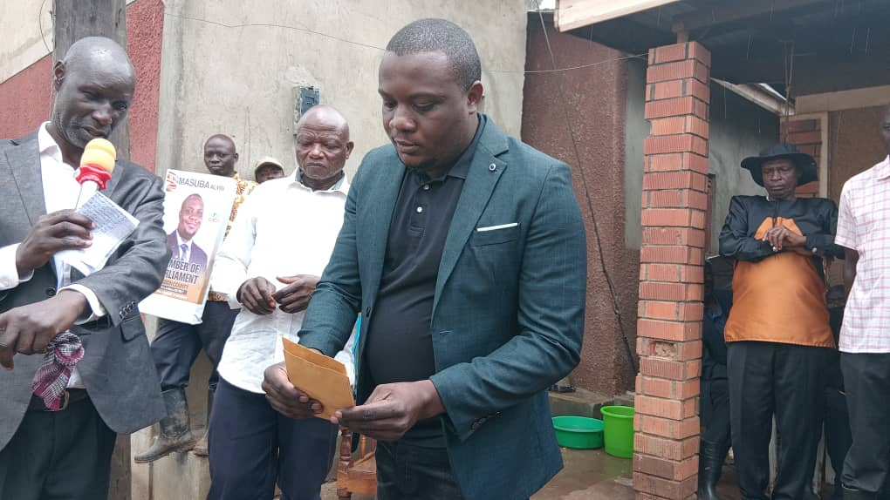
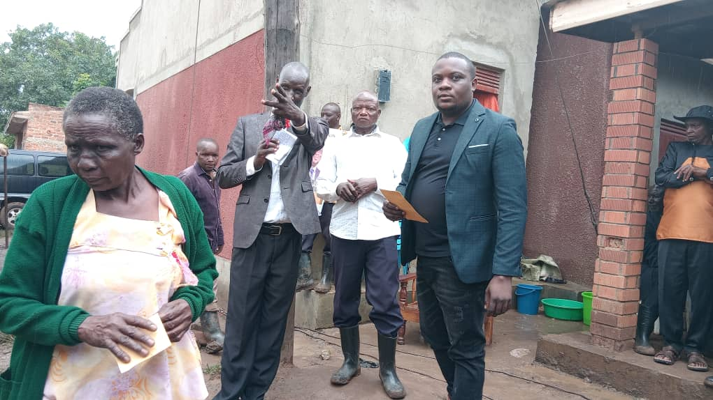
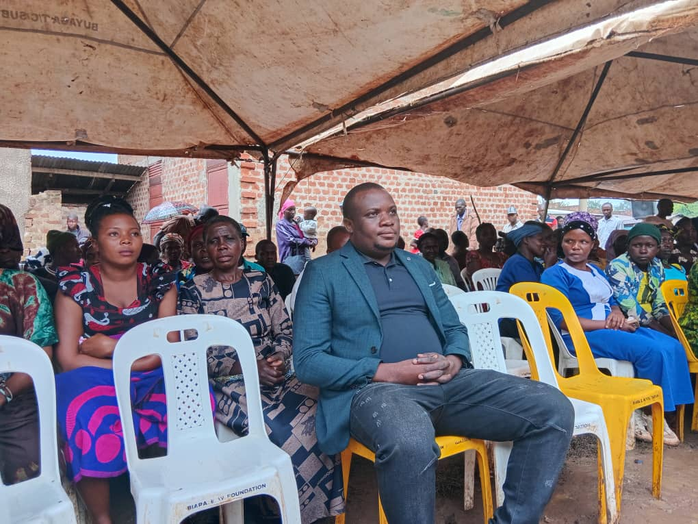
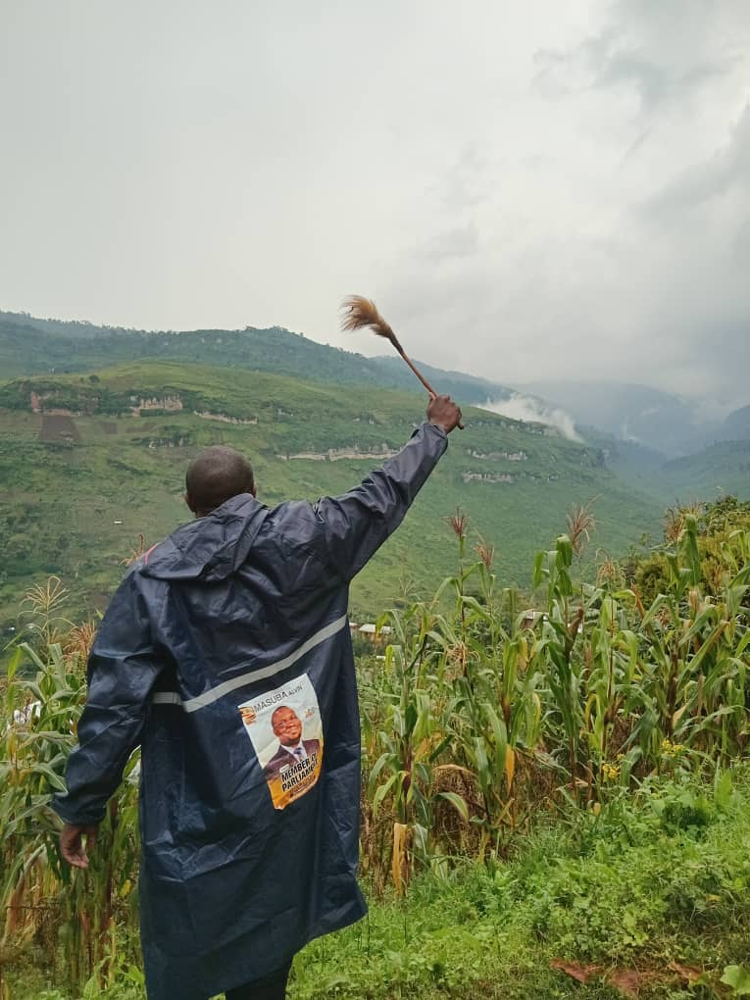
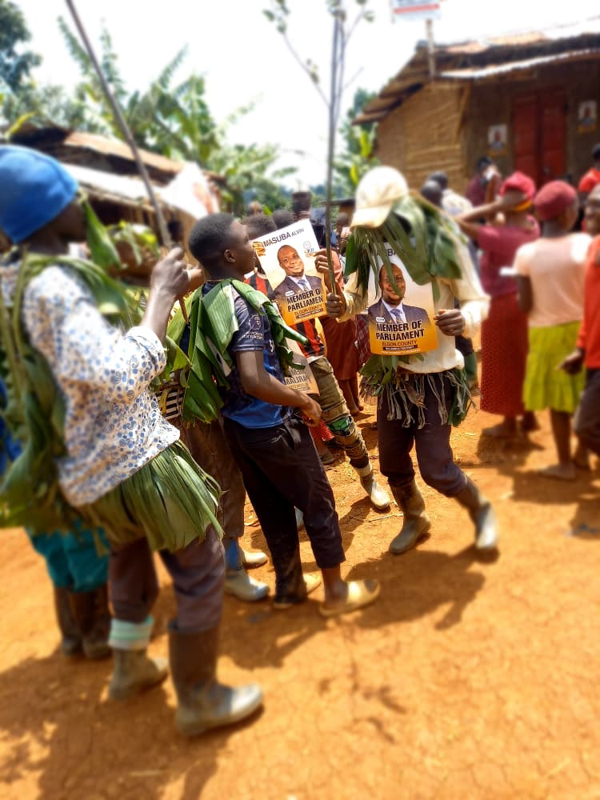
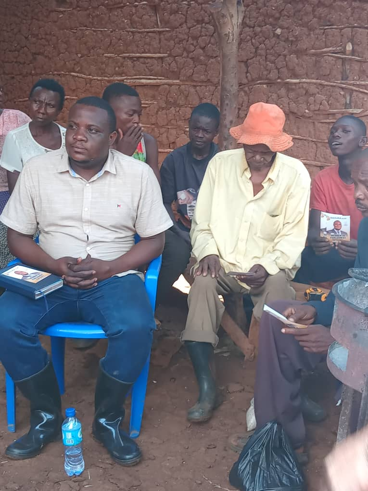
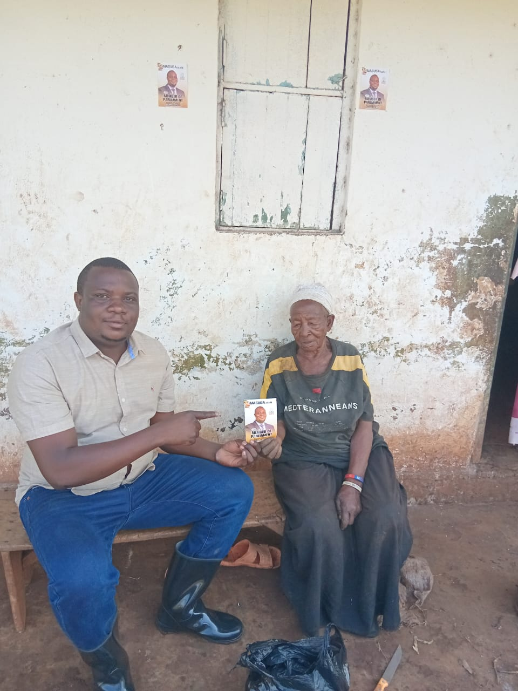
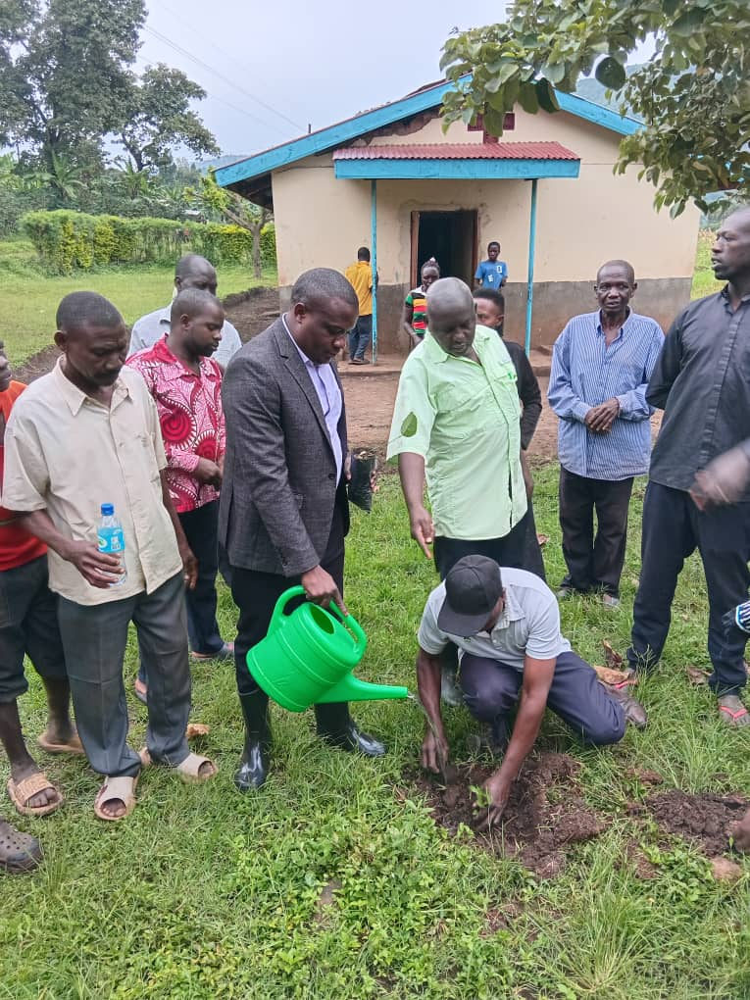
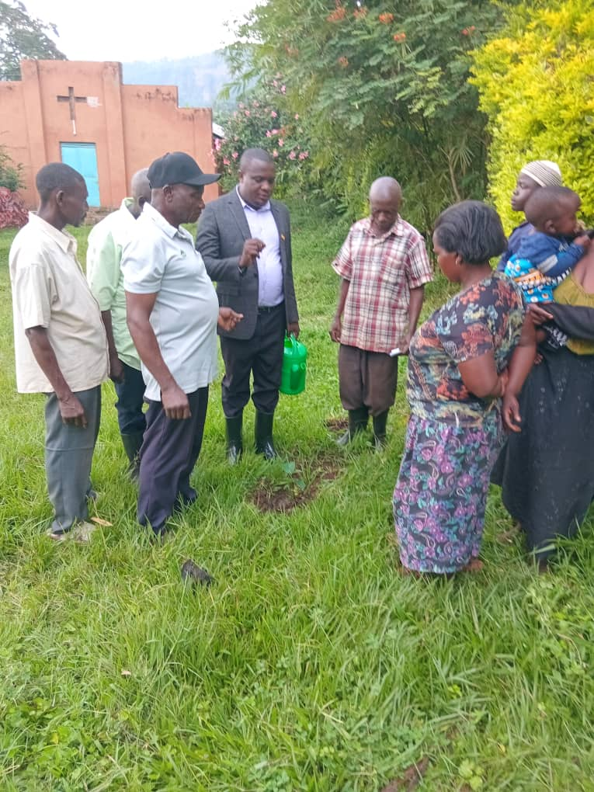

In every village, there are families quietly carrying heavy burdens: school fees they cannot raise, medicine they cannot afford, food they must ration, and emergencies that leave them with no support. Charity begins by seeing these struggles clearly and responding with compassion. For Alvin Masuba, service to people is not a slogan. It is a duty rooted in humanity and a belief that leadership must be felt in homes, not just heard on platforms.
This vision is simple: hand lifts hand. Those with strength support those in need, and those helped today become helpers tomorrow. A serious charity initiative in Elgon County can connect well-wishers, professionals, faith communities, youth, and local leaders to create practical responses for vulnerable households. The purpose is not to replace families or government, but to close urgent gaps with dignity, speed, and accountability.
Why Charity Matters Right Now
Many households in Elgon County face overlapping pressures. A focused charity platform can deliver support where it is most needed:
- Emergency food and basic supplies for households in crisis
- School support for children at risk of dropping out
- Medical referrals and treatment support for vulnerable patients
- Condolence and bereavement support for grieving families
- Community contributions that restore dignity, not dependency

From Good Intentions to a Working System
The biggest challenge with many charity efforts is inconsistency. Support appears during headlines, then disappears. This blog proposes a more durable model: map needs at parish level, prioritize urgent cases, mobilize transparent contributions, and report outcomes clearly. That means moving from occasional giving to a trusted local system where people know where help is going and who has been reached.
Partnerships That Expand Reach
Charity becomes more effective when it is collaborative. Churches, mosques, schools, health workers, women groups, and youth associations each hold part of the solution. Working together helps identify real needs quickly, avoid duplication, and extend support to homes that are usually invisible. It also builds stronger social trust and a broader support network that can continue beyond election cycles.


What Success Looks Like
A strong charity movement does more than provide items. It restores confidence to a struggling parent, keeps a child in school, gives hope to patients, and reminds families that they are not alone. It also creates a bridge between community members and responsible leadership built on service, integrity, and measurable impact.
This is how "From Promises to Progress" becomes real: consistent compassion, organized support, and shared responsibility for the most vulnerable.
Photo Story: Charity in Motion
Below is a visual story of outreach moments, volunteer action, and community solidarity. These images represent the spirit of giving that this initiative seeks to grow across Elgon County.





